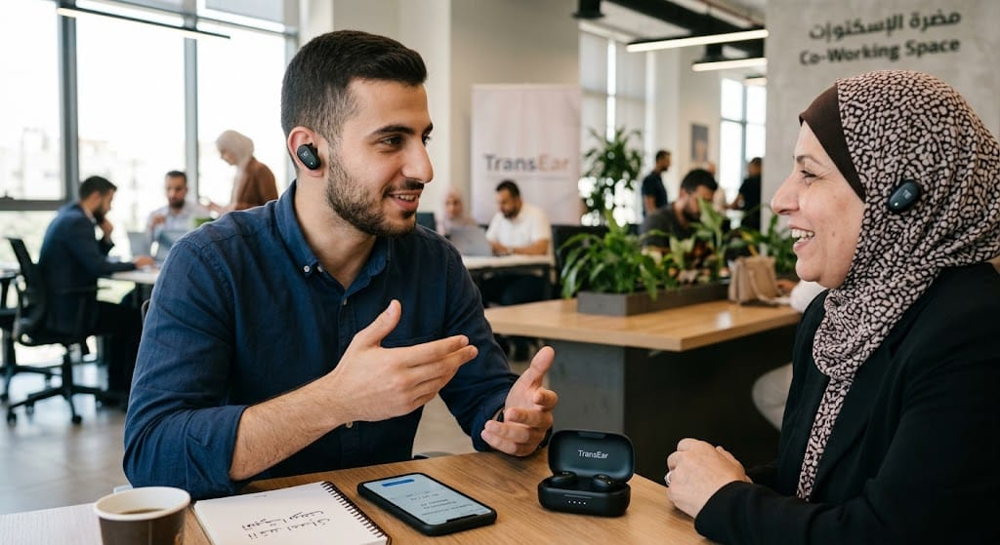

فكِرة ممتازة وجذابة جداً، خصوصاً في مجتمعنا العربي والداخل حيث الحاجة ماسة لكسر حاجز اللغة في الحياة اليومية والعملية! إليك صياغة مقترح مشروع (Project Proposal) متكاملة ومفصلة لتقديمها لجهات الدعم، المستثمرين، أو كمشروع تقديمي.
01 الملخص التنفيذي (Executive Summary)
في عالم يتسم بالتنوع اللغوي والتداخل الثقافي والمهني، يقف حاجز اللغة كأحد أكبر العوائق أمام التواصل السلس والتطور المهني والأكاديمي. يُقدم مشروع TransEar حلاً تكنولوجياً مبتكراً يعتمد على الذكاء الاصطناعي (AI) وتقنيات المعالجة الصوتية، وهو عبارة عن سماعات أذن ذكية (Smart Earbuds) مع تطبيق هاتف ذكي، تعمل على الترجمة الفورية المتبادلة بالصوت بين اللغات: العبرية، الإنجليزية، والعربية.
هدف المشروع هو تقديم تجربة تواصل طبيعية، حيث يتحدث الشخص بلغته الأم وتصل الرسالة للمستمع مترجمة فوراً في أذنه بنبرة صوتية واضحة وبأقل نسبة تأخير ممكنة (Low Latency).
02 المشكلة والدافع (The Problem & Motivation)
أ. المشكلة:
- • العائق اللغوي في الحياة اليومية والعمل: يواجه الكثير من الناطقين بالعربية صعوبات في التواصل السلس باللغتين العبرية أو الإنجليزية في مجالات العمل، الجامعات، المستشفيات، والدوائر الحكومية.
- • بطء الحلول التقليدية: تطبيقات الترجمة الحالية على الهواتف تتطلب كتابة النص أو إيقاف المحادثة لإعادة تشغيل الصوت، مما يفقد الحوار تلقائيته ويسرّع الشعور بالإحراج أو التوتر.
- • تحديات اللهجات العامية: معظم أدوات الترجمة الحالية تركز على اللغة العربية الفصحى وتفشل في فهم العامية المحلية أو المصطلحات المستعملة في سوق العمل والشارع.
ب. الدافع وفرصة السوق:
- • زيادة الحاجة إلى التداخل والدمج الاجتماعي والمهني.
- • التطور المذهل في نماذج الذكاء الاصطناعي الشفهية (Voice-to-Voice AI Models) القادرة على الفهم والترجمة في أجزاء من الثانية.
03 وصف المنتج والحل المبتكر (Product & Solution)
يتكون مشروع TransEar من نظام مدمج يشمل جزأين رئيسيين:
🎧 1. العتاد الصلب (Hardware)
- سماعات أذن لاسلكية (TWS): مزودة بميكروفونات مزدوجة عالية الدقة مع تقنية إلغاء الضوضاء (ENC).
- زر ذكي: حساس لمس لبدء وإيقاف الاستماع الفوري بسهولة.
💻 2. البرمجيات والذكاء الاصطناعي (AI Engine)
- تطبيق الهاتف المحمول: للتحكم في اللغات، سرعة الصوت، وحفظ النصوص المترجمة.
- محرك الذكاء الاصطناعي: يتضمن تحويل الصوت لنص (STT), الترجمة العصبية حسب السياق (NMT), وتحويل النص لصوت طبيعي (TTS).

04 أسرار التميز والقيمة المضافة (UVP)
| الميزة | المعيار التقليدي (تطبيق هاتف) | مشروع TransEar |
|---|---|---|
| طريقة الاستخدام | إمساك الهاتف وتوجيهه للمتحدث | حرية اليدين (Hands-free) والتواصل بالعينين |
| التأخير (Latency) | من 3 إلى 5 ثوانٍ | أقل من ثانية واحدة (Real-time) |
| فهم العامية | ضعيف (يعتمد على الفصحى) | مدرب على المصطلحات اليومية والعامية المحلية |
| وضع المحادثة الثنائية | خيار معقد | إمكانية إعطاء سماعة للطرف الآخر والتحدث بحرية |
05 أوضاع التشغيل الأساسية (Operating Modes)
🗣️ وضع الحوار المباشر
يرتدي المستخدم سماعة ويُعطي الثانية للشخص الآخر (طبيب، موظف، زميل). يتحدث كل بلغته وتصل الترجمة فوراً.
🎧 وضع الاستماع
يرتدي المستخدم السماعتين خلال محاضرة أو اجتماع بالعبرية أو الإنجليزية، وتقوم السماعة بالترجمة الفورية للعربية.
📱 وضع الترجمة السريعة
يلتقط الميكروفون الصوت الخارجي ويُصدر الهاتف الترجمة بصوت عالٍ للحالات السريعة مثل طلب طعام.
06 الشريحة المستهدفة (Target Audience)
الطلاب الأكاديميون
الطلاب العرب في الجامعات والمعاهد التي تُدرّس بالعبرية أو الإنجليزية.
الموظفون والمهنيون
العاملون في الشركات، المستشفيات، والقطاعات التي تتطلب لغة مشتركة يومياً.
الحياة اليومية والمعاملات
تسهيل المعاملات الرسمية، التسوق، والتواصل اليومي بكل سلاسة.
السياح ورجال الأعمال
الراغبون في التنقل والتواصل دون عوائق لغوية أينما ذهبوا.
07 الخطة التقنية ومراحل التطوير (Roadmap)
المرحلة الأولى: البحث والنموذج الأولي
الشهر 1 - 3تحديد البروتوكولات التقنية ومزودي خدمات الذكاء الاصطناعي (مثل OpenAI أو Google Cloud)، وتصميم أول نموذج برمجي (MVP).
المرحلة الثانية: تدريب النموذج واللغات
الشهر 4 - 6بناء قاعدة بيانات مصطلحات تتضمن العامية اليومية والمصطلحات الأكاديمية العبرية والإنجليزية وترجمتها بدقة للعربية، وخفض زمن الاستجابة (Latency).
المرحلة الثالثة: التصنيع والتجربة الميدانية
الشهر 7 - 9التعاقد مع مصنع لتجهيز العتاد الخارجي (Hardware OEM) مع طبع علامة TransEar، وإطلاق نسخة تجريبية لـ 100 مستخدم.
المرحلة الرابعة: التسويق والإطلاق الرسمي
الشهر 10 - 12إطلاق حملة تسويقية عبر منصات التواصل وتوفير المنتج في المتاجر الإلكترونية والنقاط البيعية الشريكة.
08 الخطة المالية ونموذج العمل (Business Model)
📦 بيع العتاد (Hardware)
بيع السماعة بسعر منافس يشمل اشتراكاً مجانياً للخدمة لمدة سنة كاملة.
🔄 الاشتراك البرمجي (SaaS)
اشتراك شهري/سنوي رمزي بعد السنة الأولى لتحديثات الترجمة ودعم اللغات الإضافية.
🏢 مبيعات المؤسسات (B2B)
باقات خاصة للشركات، المستشفيات، والجامعات لتسهيل التواصل بين الكادر والمراجعين.
09 التحديات المتوقعة وكيفية مواجهتها (Risks)
10. الخاتمة (Conclusion)
مشروع TransEar ليس مجرد سماعة أذن، بل هو جسر للتواصل الإنساني والمهني. من خلال الدمج بين الذكاء الاصطناعي والعتاد الذكي، يمتلك هذا المشروع القدرة على تغيير حياة الآلاف يومياً، وتمكينهم من التعبير عن أنفسهم وفهم الآخرين بكل ثقة وسلاسة.